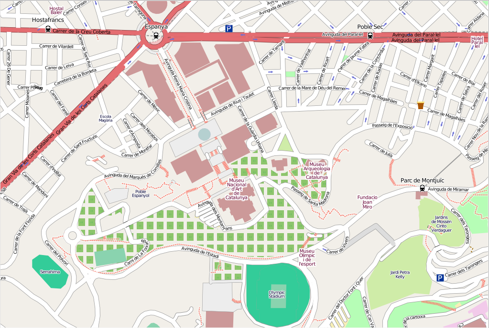

Mapnik¶
Moteur de rendu cartographique¶
Mapnik est une boîte à outils pour générer des belles cartes, avec des bordures claires, arrondies aux angles grâce aux systèmes d’anti-crênelage, de placement « intelligent » des étiquettes, et à la représentation avec des symbologies SVG (redimensionnables). Mapnik est célèbre pour être utiliser pour générer le rendu principal des couches de carte du projet OpenStreetMap.
Typiquement, Mapnik est encapsulé dans des applications Python qui fournissent des cartes via Internet bien que les améliorations d’échelle aient également permis récemment à Mapnik d’être utilisé pour créer aussi des cartes papier haute résolution.
{kind=link}
Fonctionnalités principales¶
Essentiellement constitué d’une collection d’objets géographiques (« map », « layer », « datasource », « feature », « geometry »), la bibliothèque ne s’appuie pas sur un « système avec des fenêtres » et peut être déployée sur n’importe quel environnement serveur. Il est destiné à bien jouer dans un environnement multi-thread et vise en premier mais pas exclusivement le développement web.
Les bindings Python de hauts-niveaux (boost.python) facilitent le développement rapide d’applications, ciblant zope3, django, etc…
Mapnik est multiplate-formes. Les paquets sont disponibles pour la plupart des distributions Linux et des installateurs sont habituellement utilisés sur Mac OS X et Windows.
Détails¶
Site Internet: https://mapnik.org/
Licence: LGPL (GNU Lesser General Public Licence)
Version du logiciel: 3.0.22
Plates-formes supportées: Windows, Linux, Mac
Interfaces de l’API: C++, Python